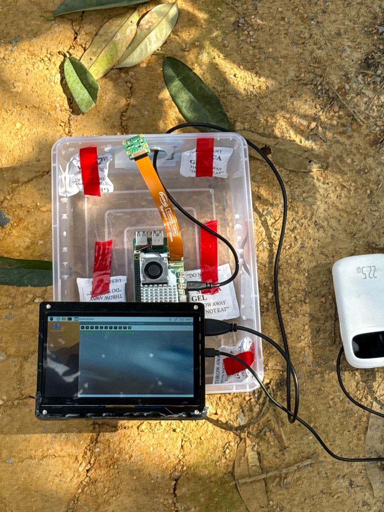

AgriTech Computer Vision | Edge AI Deployment
I build vision systems for agriculture and run them on edge hardware — then measure what actually happens on the device: latency, power, heat, and the classes a benchmark score quietly loses.
Founder & lead engineer, 2025 – present · pre-incorporation venture, Malaysia
A grower walks the orchard, photographs a suspect leaf or trunk, and within a few hundred milliseconds the device suggests which of 12 disease and pest categories it might be. It runs entirely on a battery-powered Raspberry Pi 5 — no network, nothing uploaded — and is a decision aid, not a diagnosis: the final call stays with the grower.
I built the whole thing: field data collection across 11 orchard sites in Peninsular Malaysia and Sabah, the lesion-level annotation standard (set with a crop-protection practitioner), detector training, ONNX / LiteRT export, quantisation, and on-device profiling with hardware counters. It is a field-tested prototype; trials with growers are the next step.

Each one is a question the device forced me to answer, with the measurement that answered it. Each links to its public code and data.
The fielded system ran two specialist detectors (diseases, pests) fused at run time. I trained a unified 12-class detector and compared them as deployable pipelines, not as models: same 247-image evaluation set, same decoding, fusion policy swept, three seeds, paired bootstrap.
INT8 is the default before deployment: 2.9–4.2× faster and 71–79% less energy per image on this device. Aggregate mAP fell 31–53%, which a team might accept — but scored per class, INT8 dropped the two smallest pest categories below a usable bound on every backbone. Those were the two categories the device exists to catch.
Everyone worries about frequency throttling. On this platform it cost 2.6% of median latency. What interrupted monitoring was the 82 °C software cut-off: 99 events in 3 hours of continuous inference, each a 5 s gap during which trees were walked past unexamined. A 30 s sleep interval removed them under test conditions; 45 s kept a margin.
Running two detectors at the same time on a passively cooled node pushed the die to 81.0 °C, one degree from the cut-off. Running them one after the other peaked at 68.3 °C — same models, same frame rate, no hardware change — and cut pest-model latency by 33%.
The plan was two products: Jetson for growers who want the fastest device, Pi 5 for everyone else. I ported the whole pipeline to Jetson and ran both boards through the same scheduling trials and on battery before deciding.
Built and deployed an offline basil disease-monitoring node in a commercial greenhouse: ~1,700 on-site images, Raspberry Pi 5, Telegram alerts confirmed over 3-of-5 frames, under 2.5 s end to end. Then measured what Docker actually cost.
A camera carried into an orchard produces many near-independent-looking photos of one tree. Split at image level, 96.7% of test images shared a session with training; macro-F1 was inflated by 12.2 points on average and the ranking of nine architectures changed. PlantVillage has the same structure: 40,490 images are 7,524 leaves, and an image-level split leaks 99.6% of its test set.
Everything behind the numbers above is public — images, labels, weights, telemetry, and the scripts that regenerate each table.
| Release | What's in it | Link |
|---|---|---|
| Durian field dataset with capture-session IDs | 560 images, 5 classes, session identifiers, exact partitions, audit code | Zenodo |
| Durian detection dataset + trained weights | 1,121 images, 3 label sets, leak-free re-partition, one checkpoint per run | Zenodo |
| Multi-farm durian corpus (8 peninsular farms + Sabah) | 1,314 images at 640 px, farm attribution, tree IDs, split manifests | Zenodo |
| Greenhouse basil dataset + deployment telemetry | ~1,700 images, per-frame logs from profiling, field and continuous sessions | Zenodo |
| All code | Training, export, on-device measurement, audits, analysis | GitHub |
Sole author. One accepted, six under review at IEEE Transactions and Elsevier journals. I write them up because a measurement no one can check isn't worth much — not as a path to a PhD.